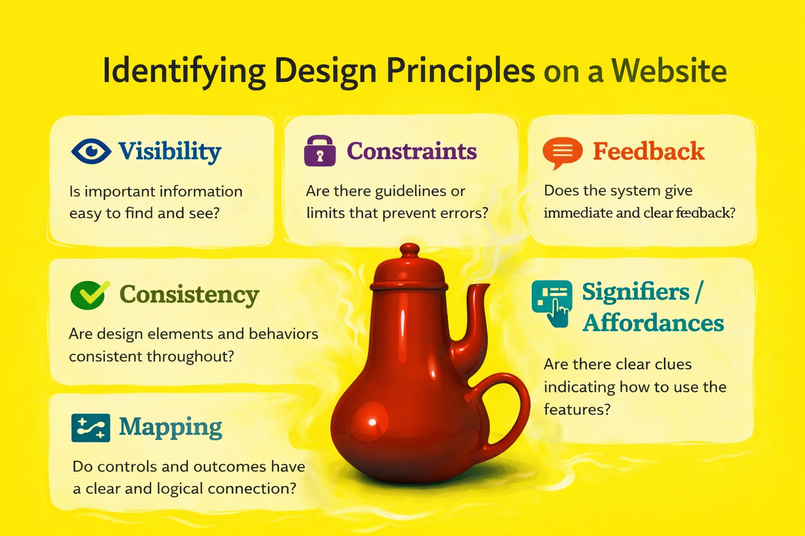
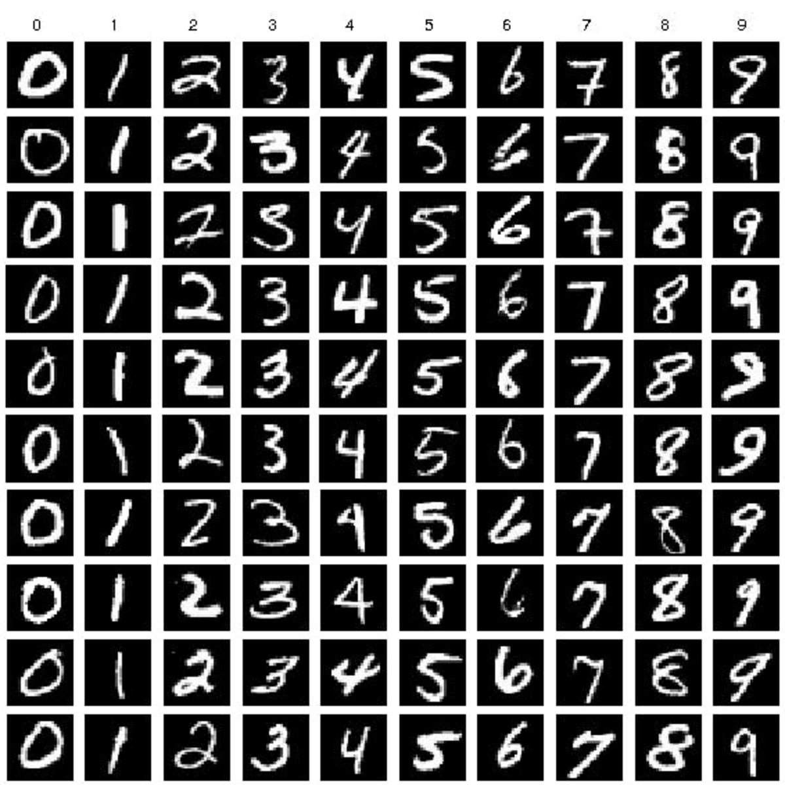
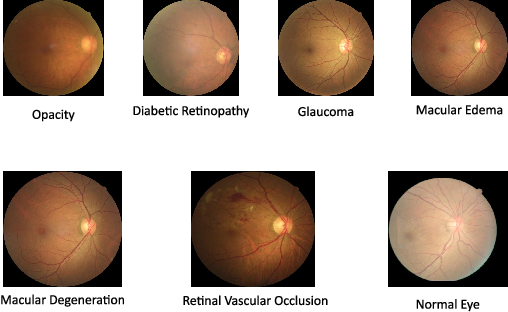
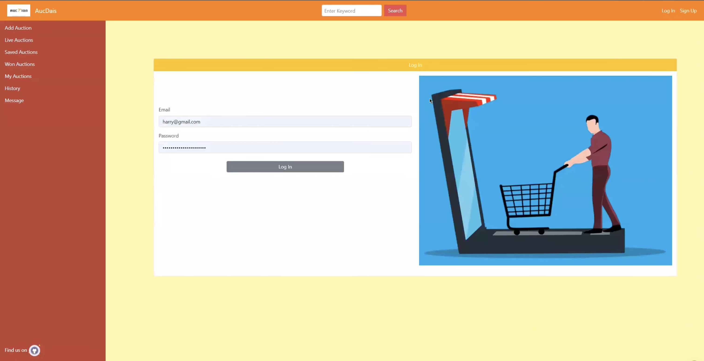
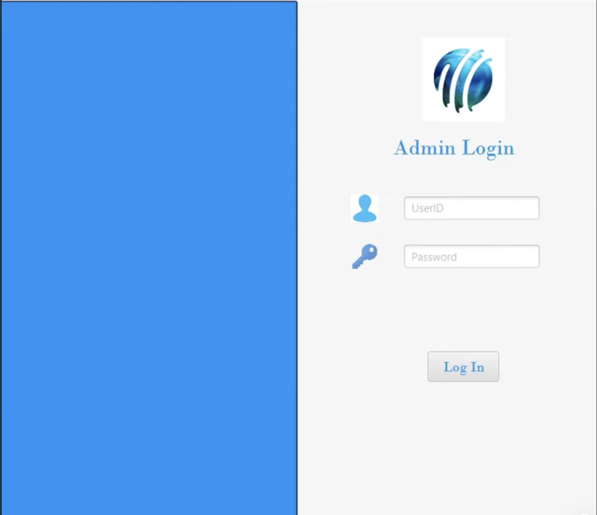

Projects
I completed a number of projects and participated in several hackathons. I have experience using Django and Spring Boot for backend development and prefer React for front-end design. For relational databases, I work with Oracle DB and PostgreSQL. In my deep learning projects, I utilize PyTorch.
Academic Projects

Description: This portfolio documents work completed for HCC 629: Fundamentals of Human-Centered Computing at the University of Maryland, Baltimore County. It presents a structured case study applying seven core interaction design principles to a real-world website, following the DEFINE case study format.
Libraries: opencv, matplotlib, tqdm, numpy, pandas, pickle, scipy
Architecture: Convolutional Neural Network (LeNet)

Description: I developed this CNN-LeNet architecture from scratch (Using a very restricted number of libraries).
I used opencv to read files, matplotlib for data visualization, numpy and pandas for data manipulation,
and scipy for performance metrics and statistics. The project does not utilize any advanced
framework such as PyTorch or Tensorflow. Thus, I had to implement all the layers with both forward and backward
propagation. I used MNIST dataset to measure its performance.
[CODE]
Libraries: numpy, matplotlib, pandas, PyTorch
Restricted Boltzmann Machine, Convolutional Neural Network (AlexNet)

Descriptoin: The main objective of this project is to use retinal images to recognize and classify
various retinal illnesses, including age-related macular degeneration and diabetic retinopathy. At first, we did
some study on several research articles on the related topic and initially decided to choose the Restricted
Boltzmann Machine as our architecture for this project. But in the end, we went with a traditional CNN-AlexNet
architecture.
[CODE]
Tools & technologies used: Spring Boot, React, Bootstrap, PostgresSQL

Description: This is an online auction platform that we developed in our software engineering
course. We used the Spring Boot framework and PostgresDB to handle the back end of the
application and utilized React and Bootstrap to implement the front end of the application.
[FRONTEND-CODE]
[BACKEND-CODE]
[VIDEO]
Tools & Technology: JavaFX, Oracle Database

Description: This is a Java based desktop application inspired by
cricbuzz. We developed this
application for our Database Management Systems course. However, unlike the cricbuzz web
application this is a back-end application designed for administrators. We used JavaFX to
implement the graphical user interface of the application and OracleDB to handle the database.
[CODE]
[VIDEO].
Tools & Technology: C, Atmel Studio, Proteus, ATmega32, Arduino
Description: Description: This project is on the development of a compiler that is a subset of the C
programming language. The operations in can handle are as follows: arithmetic operations, functions, recursion,
print, comment, loops, variables. The compiler was built step by step, started with the implementation of a
symbol table, then lexical analyzer, syntax and semantic analyzer, and finally intermediate code generator.
8086 assembly language was used as the intermediate representation. Code optimization process was also included
in the intermediate code generator step.
[CODE].